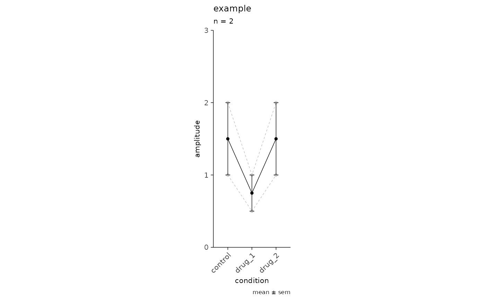

A highly abstracted plot that can be used to plot an average value within and across experiments. This is useful for examining features of synaptic events, e.g. amplitude, failure rate, potency, paired-pulse ratio. The plot requires pre-processing of the feature(s) of interest and a column with unique values to group by, i.e. experiment recording IDs.
Usage
plot_event_avg(
df,
x_axis,
y_axis,
plot_grouping,
plot_mean = FALSE,
weighted_mean = FALSE,
sd_value = NULL,
experiment_name = NULL,
x_label = NULL,
y_label = NULL,
ymax = NA,
...
)Arguments
- df
Data frame or Tibble, grouped experiment data set.
- x_axis
Character - unquoted, non-standard evaluation. Column name to use for x-axis.
- y_axis
Character - unquoted, non-standard evaluation. Column name to use for y-axis.
- plot_grouping
Character, column name to use for grouping.
- plot_mean
Boolean, add group mean to plot. Default is
FALSE.- weighted_mean
Boolean, plot weighted mean, requires df column labelled
'w'of weights \(w\). Default isFALSE.- sd_value
Optional character, std deviation measurement to use, accepts "sd" or "sem". Default is
NULL.- experiment_name
Optional character, add a subtitle with experiment name. Default is
NULL.- x_label
Optional character, custom label for x-axis. Default
NULL, will use the x_axis column name.- y_label
Optional character, custom label for y-axis. Default
NULL, will use the y_axis column name.- ymax
Optional integer, set a y-axis limit. Default is
NULLand the y-axis will be automatically determined by ggplot.- ...
Optional vargs for additional ggplot function calls, e.g.
ylim(),ylab().
Details
The weight column, w, is assumed to frequency weights - where a weight equals the number of occurrences.
Weighted mean and sd are calculated using the following formulas:
weighted mean: \(\bar{x}=\frac{\sum\limits_{i=1}^n w_i x_i}{\sum\limits_{i=1}^n w_i}\)
weighted sd: \(\sqrt{\hat{\sigma}^2_\mathrm{w}}\)
unbiased variance: \(\hat{\sigma}^2_\mathrm{w}=\frac{\sum\limits_{i=1}^N w_i \left(x_i - \mu^{*}\right)^2 }{\sum_{i=1}^N w_i - 1}\)
Examples
simple_tbl <-
data.frame(
recording_id = rep(1:2, each = 3),
experiment_id = rep("example", 6),
condition = rep(c("control", "drug_1", "drug_2"), 2),
amplitude = c(1, 0.5, 1, 2, 1, 2)
)
plot_event_avg(
df = simple_tbl,
x_axis = condition,
y_axis = amplitude,
plot_grouping = "recording_id",
plot_mean = TRUE,
sd_value = "sem",
experiment_name = "example",
ymax = 3
) + ggplot2::coord_fixed(ratio = 3)

# remove average and add custom labels
plot_event_avg(
df = simple_tbl,
x_axis = condition,
y_axis = amplitude,
plot_grouping = "recording_id",
plot_mean = FALSE,
experiment_name = "example",
x_label = "custom x-label",
y_label = "custom y-label",
ymax = 3
)
# plot a weighted average
weighted_tbl <-
data.frame(
recording_id = rep(1:2, each = 3),
experiment_id = rep("example", 6),
condition = rep(c("control", "drug_1", "drug_2"), 2),
amplitude = c(1, 0.5, 1, 2, 1, 2),
w = rep(c(1, 100), each = 3)
)
plot_event_avg(
df = weighted_tbl,
x_axis = condition,
y_axis = amplitude,
plot_grouping = "recording_id",
plot_mean = TRUE,
weighted_mean = TRUE,
sd_value = "sd",
experiment_name = "plot weighted mean",
x_label = "condition",
y_label = "amplitude",
ymax = 3,
)